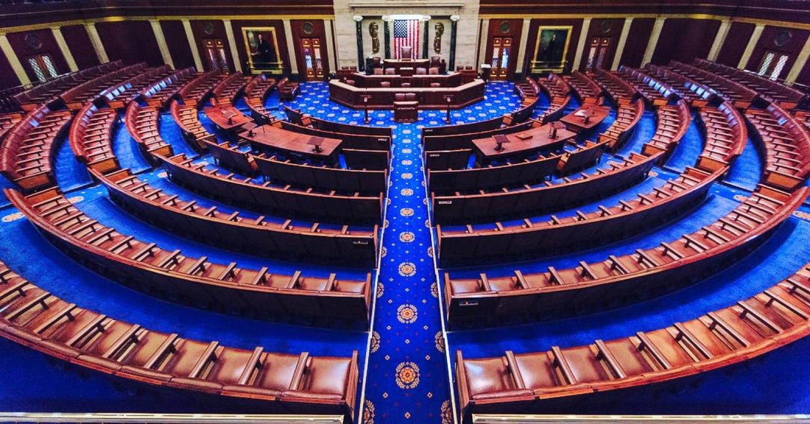

Executive Summary
미국 하원 의원실이 지난 1년 동안 AI 도구에 쓴 돈은 11만 3,740달러였다. 그중 10만 580달러가 챗GPT 한 곳으로 갔다. CNBC가 하원의 회계 지출 기록을 훑어 8월 3일 내놓은 집계이고, 같은 날 테크크런치가 이를 받아 정리했다.
달러로 따지면 88%다. 쏠림의 출발점은 2023년으로 거슬러 올라간다. 하원 디지털서비스가 초당적 보좌진 모임에 챗GPT Plus 라이선스를 무상으로 풀었고, 그때 손에 익은 도구가 나중에 의원실 예산으로 결제되는 도구가 됐다. 다만 이 집계는 무료 계정과 오피스 패키지에 딸려 들어온 AI, 상원 지출 대부분을 빼고 센 것이라 실제 사용량의 아랫단만 보여 준다.
이 글은 벤더 순위보다 그 빠진 부분을 본다. 법안 요약과 청문회 준비, 지역구 민원 응대에 AI가 들어갈 때 무엇이 입력됐고 무엇이 최종 문안에 반영됐는지는 조달 통계에도 보존 규정에도 잡히지 않는다.
주요 수치
출처: CNBC 하원 지출 기록 분석, 2025년 4월~2026년 3월
88%
하원 AI 지출 중 챗GPT 몫
11만 3,740달러 가운데 10만 580달러
798 : 37
챗GPT와 클로드의 결제 건수
금액 격차보다 건수 격차가 크다. 건수로는 96%
40개
2023년 무상 배포된 챗GPT Plus 라이선스
하원 디지털서비스가 초당적 보좌진 모임에 지급한 물량
1달러
GSA가 매긴 기관당 연 이용료
2025년 OneGov 계약으로 연방기관 전체가 프론티어 모델에 접근
챗GPT가 798건, 클로드가 37건
CNBC가 집계한 기간은 2025년 4월 1일부터 2026년 3월 31일까지다. 벤더 이름이 명시된 AI 지출만 골라내니 총액이 11만 3,740달러로 잡혔다. 이 가운데 챗GPT가 10만 580달러를 798건의 거래에 걸쳐 가져갔고, 앤트로픽의 클로드가 1만 3,160달러를 37건에서 가져갔다. 금액으로 보면 8 대 1에 가깝지만 결제 건수로 보면 20 대 1이 넘는다. 챗GPT는 여러 의원실이 각자 구독을 결제했고, 클로드는 몇몇 의원실이 뭉텅이로 결제한 것으로 보인다.

정당별로도 갈렸다. 민주당 계열 의원실 44곳이 5만 4,165달러를 썼고 공화당 계열 27곳이 1만 5,782달러를 썼다. 세 배 넘는 격차다. AI 규제를 두고 누가 더 크게 말하는지와 누가 더 많이 결제하는지가 늘 같은 방향은 아니다.
두 숫자를 더하면 지출 기록에 이름이 남은 의원실은 71곳이다. 하원 의원 정수가 435명이니 여섯 곳 중 한 곳꼴로 AI 도구값을 의원실 예산에서 결제했다는 뜻이 된다. 무료 계정과 오피스 패키지에 딸려 들어온 AI가 빠진 수치라 이것은 바닥값이다. 실제로 AI를 업무에 끼워 넣은 의원실은 이보다 많고, 얼마나 더 많은지는 이 방식으로는 알 수 없다.
쏠림의 뿌리는 2023년에 있다. 하원 디지털서비스가 초당적 보좌진 모임에 챗GPT Plus 라이선스 40개를 무상으로 배포했다. 오픈AI는 의회경영재단과 손잡고 상하원 고위 보좌진을 상대로 사용 교육 세션을 열었다. 무상 라이선스로 손에 익히고, 익숙해진 도구를 의원실 예산으로 이어 결제하는 경로가 그때 깔렸다. 지금의 88%는 갑자기 생긴 점유율이 아니라 3년 전 배포의 지연된 청구서에 가깝다.
같은 시기에 두 회사는 규제를 만드는 쪽을 향해서도 돈을 썼다. 이슈원의 분석에 따르면 오픈AI는 2026년 1분기 연방 로비에 100만 달러를 지출했고, 앤트로픽은 약 160만 달러를 썼다. 각각 전년 같은 기간의 1.8배와 3배가 넘는다. 규제 논의의 대상인 산업이 규제를 설계하는 사무실에 도구를 납품하는 구도다.
법안 요약과 민원 응대가 같은 창으로 들어간다
지출 기록은 어느 의원실이 얼마를 냈는지까지만 말해 준다. 무엇에 썼는지는 보좌진의 입을 통해 알려졌다. 그렇게 모인 용도는 언뜻 흔한 생산성 도구의 목록처럼 읽힌다.
- • 수백 쪽짜리 법안을 요약하고 쟁점을 뽑아내는 일
- • 청문회에 들고 들어갈 질의 자료와 배경 메모를 만드는 일
- • 정책 조사 자료를 검토하고 논점을 정리하는 일
- • 지역구 유권자의 민원에 보내는 답신 초안을 쓰는 일
- • 의원 명의로 나가는 소셜미디어 게시물 초안을 잡는 일

회의 일정을 잡거나 이메일을 다듬는 일이라면 도구를 무엇으로 쓰든 남는 문제가 없다. 위 다섯 가지는 그렇지 않다. 법안 요약은 의원의 표결 판단으로 이어지고, 민원 답신은 유권자에게 정부의 공식 답변으로 도착하며, 청문회 자료는 증인에게 던지는 질문이 된다. 최종 산출물은 사람의 이름으로 나가지만, 그 문안의 어느 대목이 모델의 요약에서 왔는지는 문서 자체에 표시되지 않는다.
입력 쪽도 마찬가지다. 요약을 시키려면 법안 원문이 챗GPT 창 안으로 들어가야 하고, 민원 답신을 쓰려면 유권자가 보낸 사연이 창 안으로 들어간다. 그중 어느 정도가 공개 문서이고 어느 정도가 개인이 보낸 편지인지를 구분해 기록하는 절차는 의원실 단위로 제각각이다. 브레넌 정의센터의 에릭 페트리는 입법자와 보좌진이 규제를 설계하기 전에 여러 AI 제품을 직접 다뤄 봐야 한다고 말한다. 타당한 지적이지만, 직접 다뤄 본 흔적을 무엇으로 남길지는 그 옹호론이 답하지 않는 대목이다.
돈은 세는데 대화는 세지 않는다
하원은 의원실의 지출 내역을 분기마다 공개한다. 벤더 이름과 금액, 날짜가 회계 시스템에 남으니 기자가 그것을 긁어모아 셀 수 있었다. 이 통계는 그렇게 나왔고, 같은 이유로 셀 수 있는 것은 결제뿐이다.
보좌진이 챗GPT 창을 한 번 열었을 때 시스템에 남는 것은 구독료가 빠져나갔다는 사실뿐이다. 어떤 법안을 창 안에 넣었는지, 모델이 무엇을 돌려줬는지, 그 답이 최종 문안에 얼마나 들어갔는지는 회계 항목이 아니라서 기록될 자리가 없다. 같은 한 번의 사용에서 무엇이 남고 무엇이 남지 않는지를 갈라 보면 아래와 같다.
무료 계정이 오른쪽 칸에 들어가 있는 것이 이 구조의 핵심이다. 결제가 없으면 회계 기록도 없고, 회계 기록이 없으면 그 사용은 통계에서 사라진다. CNBC 집계가 오피스 패키지에 포함된 AI와 상원 지출 대부분을 잡아내지 못한 이유도 같다. 88%라는 숫자는 벤더 점유율을 말하기 전에, 셀 수 있는 것과 셀 수 없는 것의 경계가 어디에 그어져 있는지를 먼저 말한다.
경계는 앞으로 더 흐려질 참이다. 2025년 8월 조달청은 OneGov 프로그램을 통해 챗GPT 엔터프라이즈를 참여 연방기관당 연 1달러에 공급하기로 했다. 앤트로픽이 같은 조건으로 맞붙었고 구글은 47센트를 불렀다. 200만 명이 넘는 연방 공무원이 사실상 무료로 프론티어 모델을 쓸 수 있게 된 것인데, 결제액이 1달러라는 말은 회계 기록에 남는 신호도 1달러어치라는 말이다.
연방 뉴스 네트워크의 한 논평은 이 계약을 벤더 종속의 입구로 본다. 2025년 4월 보훈부가 맺은 마이크로소프트 엔터프라이즈 계약이 30년 누적으로 연 9억 3천만 달러 규모까지 불어난 전례를 들면서다. 조달 단가가 상징적으로 낮을수록 도입은 빨라지고, 도입이 빨라질수록 나중에 갈아타는 비용은 커진다. 하원의 88%는 그 곡선의 앞부분에 찍힌 점이다.
연방기록이라는 판정은 이미 나와 있다
법적 지위가 비어 있는 것은 아니다. 국토안보부는 생성형 AI 사용을 승인하면서 오픈AI 이용약관을 개정해, AI가 만들어 낸 출력물이 연방기록에 해당하며 정보자유법의 공개 청구 대상이 된다는 원칙을 세워 두었다. 판정은 나와 있는 셈이다.
문제는 보존 가능 여부가 계정 형태에 달려 있다는 데 있다. 기관 계정으로 쓰면 대화 로그를 내보내 보관할 길이 있지만, 직원이 개인 계정의 무료 버전을 쓰면 그 기록은 개인 히스토리와 브라우저 캐시에만 남는다. 기관이 손댈 수 없는 자리에 공적 기록이 쌓이는 구조다. 앞 절의 도식에서 무료 계정이 통계와 보존 양쪽 모두에서 빠져 있던 것과 같은 이유다.
주 정부 단위에서는 이미 실물로 확인됐다. 2025년 워싱턴주의 여러 도시가 기자의 정보공개 청구에 챗GPT와 코파일럿 대화 로그를 실제로 제출했다. 기술적으로 불가능한 일이 아니라는 증거이자, 청구가 들어와야 비로소 드러난다는 증거이기도 하다. 표준 절차로 상시 보존되는 것과 요청이 올 때 뒤늦게 긁어모으는 것은 다른 일이다.
연방 차원의 표준은 아직 눈에 띄지 않는다. 공개된 자료로 확인되는 한 국가기록관리청은 AI가 생성한 기록에 특화된 보존 일정을 내놓지 않았다. 기존 보존 일정이 파일 형식이 아니라 업무 맥락을 기준으로 짜여 있어 AI 산출물에 그대로 얹기 어렵다는 지적도 기록관리 실무 쪽에서 나온다. 도구는 1달러에 들어가는데 그 도구가 만든 기록을 몇 년 보관할지는 정해지지 않았다.
법적 지위와 보존 실무 사이의 간격이 이 사안의 실질이다. 출력물이 연방기록이라는 판정은 그 기록이 실제로 남아 있을 때만 효력을 갖는다. 남기는 장치 없이 지위만 선언되면, 공개 청구가 들어왔을 때 기관이 내놓을 수 있는 것은 결제 내역뿐이다.
AI가 거든 판단을 2년 뒤에 되짚을 수 있는가
데이터를 다루는 쪽에서 보면 이 사례의 요점은 하나다. 조달 통계가 데이터 계보의 대리 지표로 쓰이고 있다. 프롬프트와 입력 문서, 출력, 반영 여부를 아무도 집계하지 않기 때문에 셀 수 있는 것이 돈뿐이고, 그래서 기자도 연구자도 돈을 센다. 대리 지표가 본 지표를 대신하는 상황은 본 지표가 없다는 신호다.
되짚을 수 없는 판단은 감사도 재검토도 되지 않는다. 어느 법안 분석의 특정 문단이 왜 그렇게 정리됐는지 2년 뒤에 묻는다고 하자. 그때 필요한 것은 어떤 모델의 어떤 버전이 무엇을 입력받아 무엇을 돌려줬고 그중 얼마가 최종 문안에 남았는지다. 그 좌표가 없으면 남는 답변은 그 무렵 챗GPT를 구독하고 있었다는 사실뿐이다.
공공기관이든 기업이든 지금 확인할 수 있는 것은 두 가지다. 둘 다 새 도구를 들이기 전에 답이 나와 있어야 하는 질문이고, 답이 없는 채로 도입만 빨라지면 기록은 비어 있는 상태로 쌓인다.
- • 업무 결과물에 AI가 개입한 지점이 문서 자체에 남는가. 도구를 도입했다는 기록과 어느 문단이 어떤 입력에서 나왔다는 기록은 다르다. 뒤엣것이 없으면 결과물의 근거를 되짚을 출발점이 없다.
- • 계정 형태와 무관하게 그 기록이 조직에 남는가. 개인 계정과 무료 등급으로 새어 나가는 사용은 조달에도 보존에도 잡히지 않는다. 도입 정책보다 먼저 정해져야 하는 것이 어느 경로의 사용을 조직 기록으로 인정할지다.
하원의 통계가 알려 주는 것은 어느 벤더가 이겼는가가 아니다. 공적 판단에 가까운 텍스트가 한 경로로 몰리는 속도에 비해, 그 경로에 무엇이 오갔는지를 남기는 규정이 얼마나 뒤처져 있는지다. 도입은 분기 단위로 집계되는데 보존 일정은 아직 나오지 않았다.
Editor's Note
페블러스가 AI-Ready Data를 이야기할 때 데이터 품질과 함께 놓는 것이 어떤 데이터가 어떤 판단에 쓰였는지를 남기는 일이다. 이번 하원 통계는 그 기록이 없을 때 남는 것이 결제 내역뿐이라는 사실을 공공 조달 쪽에서 보여 준 사례다.
참고문헌
1차 보도
- 1.TechCrunch. (2026-08-03). "Congress' favorite AI tool? ChatGPT." techcrunch.com
- 2.CNBC. (2026-08-03). "ChatGPT dominates early AI spending in Congress as lawmakers weigh regulation." cnbc.com
조달·정책 문서
- 3.U.S. General Services Administration. (2025-08-06). "GSA Announces New Partnership with OpenAI, Delivering Deep Discount to ChatGPT Gov-Wide Through MAS." gsa.gov
- 4.Federal News Network. (2026-06). "The coming AI reckoning: Slouching toward vendor lock." federalnewsnetwork.com
- 5.Issue One. (2026). "Big Tech Spends Millions to Buy Influence in Washington in First Half of 2026." issueone.org
기록 관리·거버넌스
- 6.FedScoop. (2024). "Generative AI could raise questions for federal records laws." fedscoop.com
- 7.Cascade PBS. (2025-08-31). "Washington city officials are using ChatGPT for government work." cascadepbs.org